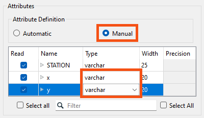
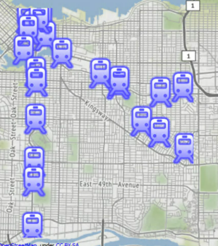

Learning Objectives
After completing this lesson, you'll be able to:
- Explain when to use the VertexCreator.
- Create point geometry using attribute values and the VertexCreator.
Video
Resources
The VertexCreator
The VertexCreator takes attributes with coordinates and creates points. This transformer is most useful when:
- You want to create points from a reader that cannot do it automatically.
- You want to create points after reading, e.g., if you are reading coordinates from an API call using the HTTPCaller.
You can change the Mode parameter to build line, arc, or polygon geometry with the VertexCreator.
Exercise
- Open FME Workbench 2022.0. Click Blank Workspace to start a new workspace. Click Readers > Add Reader and set Format to CSV (Comma-Separated Value).
- Click the ellipsis button [...] and select the downloaded rapid_transit_stations.csv file, or paste in the URL.
- Set the Coord. System to UTM83-10, then click OK.
- Note: if you are using FME 2020 or later, click the Parameters button and change x and y to the varchar data type. This will ensure that FME does not automatically create points when the data is read.
- 
- The reader feature type appears on the canvas.
- After the reader is added to the canvas without setting the Attribute Definition in the parameters, add a VertexCreator transformer. The VertexCreator creates a point feature of each record using X/Y/Z or Longitude/Latitude/Elevation values stored in the attributes. Each point feature retains all the attributes of the original feature.

- Run the workspace and inspect the results.
Results

The output of point features using any of the three methods. Stylized in FME Data Inspector using map tiles by Stamen Design, under CC-BY-3.0. Data by OpenStreetMap, under CC-BY-SA.